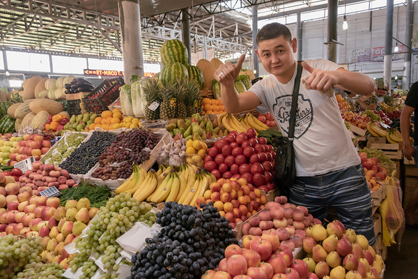
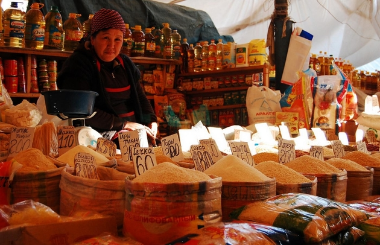
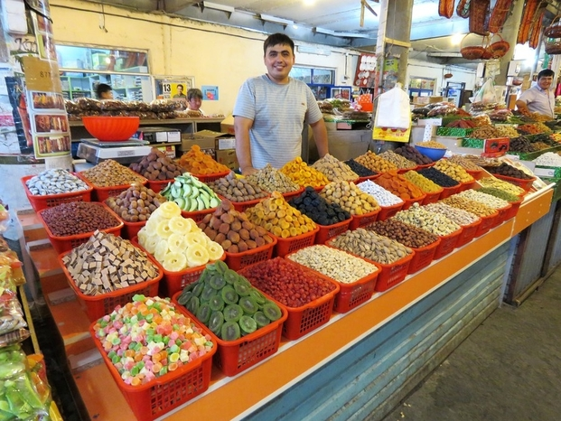

Bazar Samal

Of several new markets around the city fringes, Bazar Samal, next to Samal bus station, is the biggest and most interesting, with a particularly colourful array of rugs and textiles, as well as food and millions of items of clothing.
How to get there? Just seat on the "20", "40", "92" or "103" bus and you will be there immidetly
Central or Upper Bazaar

The central bazaar is now somewhat diminished after the conversion of its outlying sprawl into parks and the removal of many traders to markets on the city's outskirts, but it still bustles and is a reminder of Shymkent’s long trading history.
How to get there? Just seat on the "4", "12,12A,12B", "55" or "103" bus and you will be there immidetly
Aina Bazar

good for buying food and random stuff (some clothes, Chinese electronics, burned CDs with Kazakh music, etc.). In a microregion a bit outside of town, but public transport regularly goes there.
How to get there? Just seat on the "27", "78" or "103" bus and you will be there immidetly